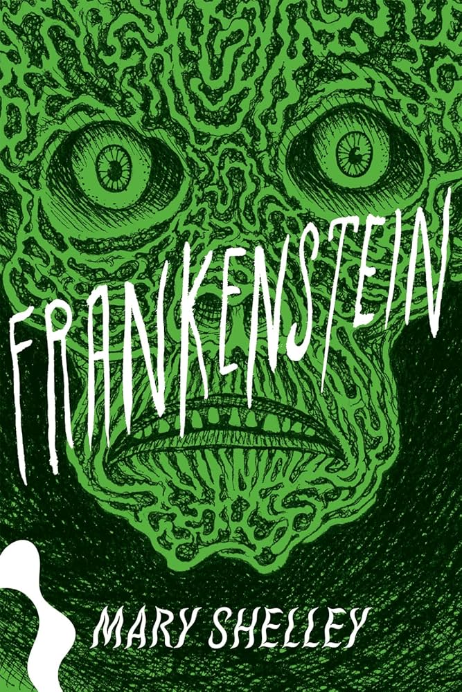

Resumo do Livro
Frankenstein é uma obra clássica de Mary Shelley, escrita em 1818, que narra a história de Victor Frankenstein, um jovem cientista obcecado em criar vida artificial. Após dar vida a uma criatura monstruosa, Frankenstein se arrepende de sua criação, o que desencadeia uma série de tragédias e destruição para ambos.
